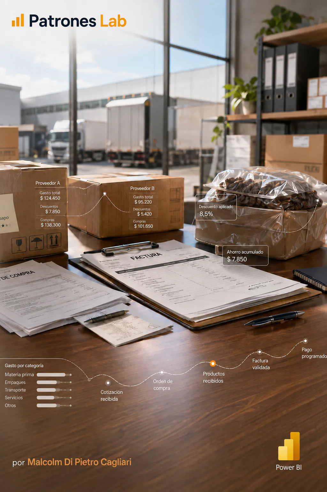

BUSINESS INTELLIGENCE · PROGETTO 13

Progetto 14 · Dashboard Power BI
Dashboard in Power BI · Analisi della spesa
Report esecutivo in Power BI orientato ad analizzare la spesa verso i fornitori, l’andamento mensile degli acquisti, l’utilizzo degli sconti e la distribuzione per Paese, categoria e livello del fornitore.
CONTESTO E OBIETTIVO
Costruire un report esecutivo che permetta di seguire la spesa totale, il numero di fatture, la spesa associata agli sconti e il risparmio ottenuto, con navigazione tra una vista generale e un’analisi specifica per fornitore.
L’obiettivo è trasformare dati di fatture, righe di fattura, fornitori, articoli, ubicazioni, valute e date in indicatori utili per acquisti e contabilità fornitori.
MODELLO E DIAGNOSI
- Il PBIX organizza l’analisi in una pagina iniziale e due pagine di report: Andamento e distribuzione della spesa, e Sconti per fornitore.
- Il modello contiene tabelle di fatture, righe di fattura, fornitori, articoli, ubicazioni, valute, tassi di cambio, date e calendario.
- Misure e visualizzazioni coprono spesa totale, numero di fatture, spesa con sconto, risparmio, sconto medio, giorni disponibili per applicare lo sconto, giorni medi di pagamento e variazione mensile.
- Il report include filtri per periodo, categoria, livello e fornitore, oltre a confronti per Paese, città, categoria, sottocategoria e livello del fornitore.
CONSEGNA E APPRENDIMENTO
La consegna include la modellazione relazionale, le misure DAX e la visualizzazione esecutiva per facilitare l’analisi della spesa e delle opportunità di risparmio.
Lo sviluppo è pubblicato su GitHub insieme al file PBIX e alla documentazione del modello, delle misure e delle decisioni di design.